在前面我们讨论的图的边都只表示连接关系，并无区分，在这节课中将讨论异构图，即包含多种不同类别的节点和边的图。我们会主要介绍知识图谱的embedding和知识图谱上的推理。
本文主要参考资料为CS224W的Lecture 10 & 11，课程视频可在Youtube观看。
Heterogeneous Graphs and Relational GCN (RGCN)
异构图是有一个四元组定义的:
其中节点$v_i\in\boldsymbol{V}$可以有不同类型$\boldsymbol{T}(v_i)$，$(v_i,r,v_j)\in\boldsymbol{E}$表示节点$v_i$与$v_j$以关系$r\in\boldsymbol{R}$相连接。如下的生物医学知识图谱就是一个异构图
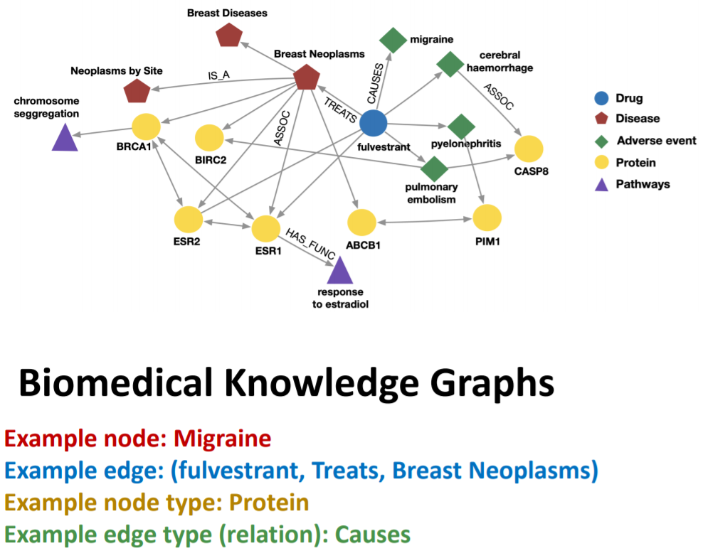
RGCN将GCN延伸到了异构图上，其对不同类型的边采用不同的权重矩阵
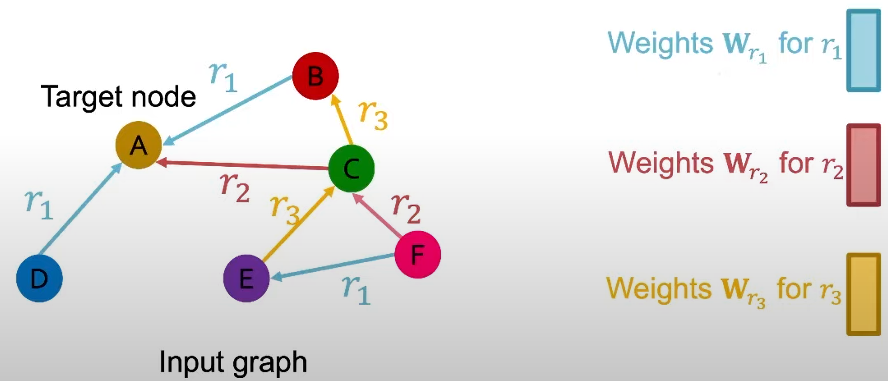
RGCN的更新形式与GCN类似，只是对不同类型的边采用了不同的权重矩阵:
这种做法会存在一个问题，如果关系的种类特别多，则参数数量会大幅上升，从而导致过拟合。为了减少参数量，我们可以用块对角矩阵来做权重矩阵，或用一组基变换来表示所有的权重矩阵，即所有权重矩阵都可以用一组矩阵来线性表示。
对于异构图的节点分类任务，与同构图是类似的，即用RGCN对每个节点产生一个embedding，每一维表示属于某类的概率。
对于异构图的link prediction任务，会与同构图有较大不同，因为会有不同类型的边。由于不同类型的边出现的频率差别可能会很大，在划分数据集时，会先对每一类边进行划分，再将所有类型的边combine在一起。
如果我们要预测节点$E$与节点$A$之间是否有某种relation，我们可以用relation-specific的分数函数$f_{r}: \mathbb{R}^{d} \times \mathbb{R}^{d} \rightarrow \mathbb{R}$来对两节点之间以$r$关系连接的可能打一个分，如$f_{r_{1}}\left(\mathbf{h}_{E}, \mathbf{h}_{A}\right)=\mathbf{h}_{E}^{T} \mathbf{W}_{r_{1}} \mathbf{h}_{A}, \mathbf{W}_{r_{1}} \in \mathbb{R}^{d \times d}$。我们也可以将其映射到01之间以表示概率。
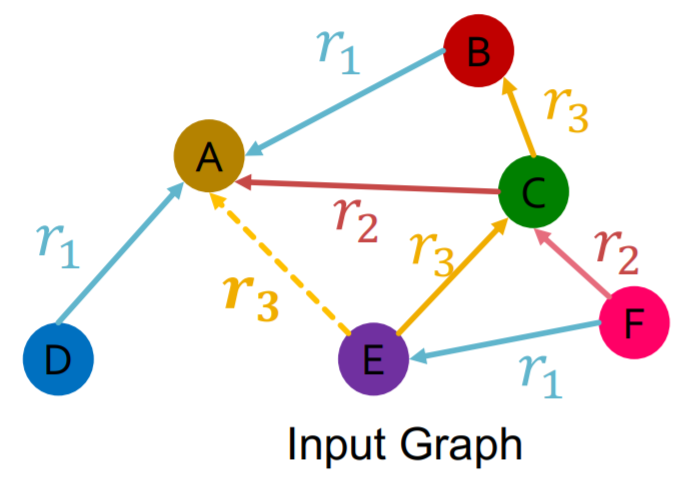
那么我们如何训练RGCN呢？
假设我们以$(E,r_3,A)$作为training supervision edge，以其他边作为training message edges，并选取一些negative edge，如$(E,r_3,B)$或$(E,r_3,D)$，则可以定义交叉熵损失函数
即最大化training supervision edge的分数，最小化nagative edge的分数。
在验证阶段，要用training message edges & training supervision edge来预测validation edge.
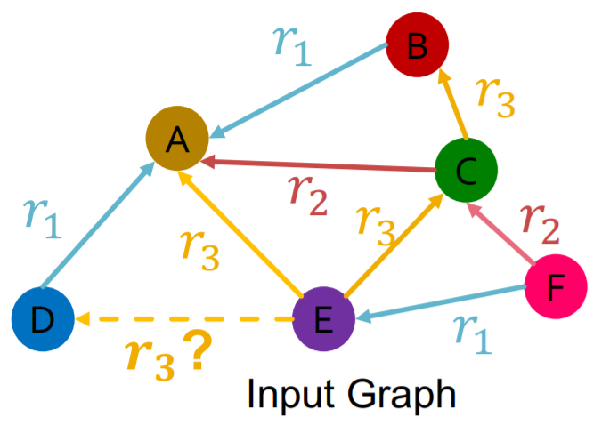
我们要找到所有的negative edge $\left\{\left(E, r_{3}, v\right) \mid v \in\{B, F\}\right\}$,其中$v$不能是training message edges & training supervision edge，然后计算$\left\{\left(E, r_{3}, v\right) \mid v \in\{B, F, D\}\right\}$的分数。再计算$(E,r_3,D)$的分数的rank，可以根据这个rank设计一些metrics，如rank在top k的概率，或rank的倒数等。
Knowledge Graphs: KG Completion with Embeddings
知识图谱是一种有着广泛应用的异构图，包含了实体、类型与关系等信息。下面我们将介绍针对知识图谱补全问题的几种算法：TransE, TransR, DistMul, ComplEx.
知识图谱补全问题是对于给定的(head,relation)找到缺失的tails
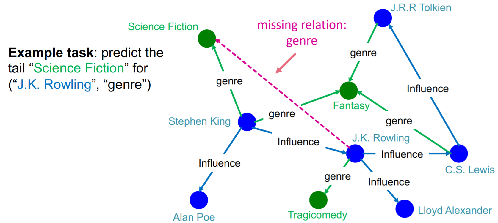
下面我们用shallow embedding来解决这个问题。对于一个true triple ($h,r,t$)，我们的目标是让($h,r$)对应的embedding与$t$的embedding尽可能相近。
TransE
对于三元组($h,r,t$)，其embedding为$\mathbf{h}, \mathbf{r}, \mathbf{t} \in \mathbb{R}^{d}$，目标为$\mathbf{h}+\mathbf{r} \approx \mathbf{t}$如果该边存在，$\mathbf{h}+\mathbf{r} \neq \mathbf{t}$如果该边不存在。
分数函数定义为$f_{r}(h, t)=-|\mathbf{h}+\mathbf{r}-\mathbf{t}|$.详细算法流程如下
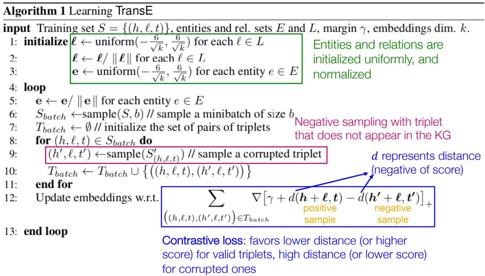
那么TransE的表示能力怎么样呢？我们先来看一下连接关系有哪些，下面是一些例子
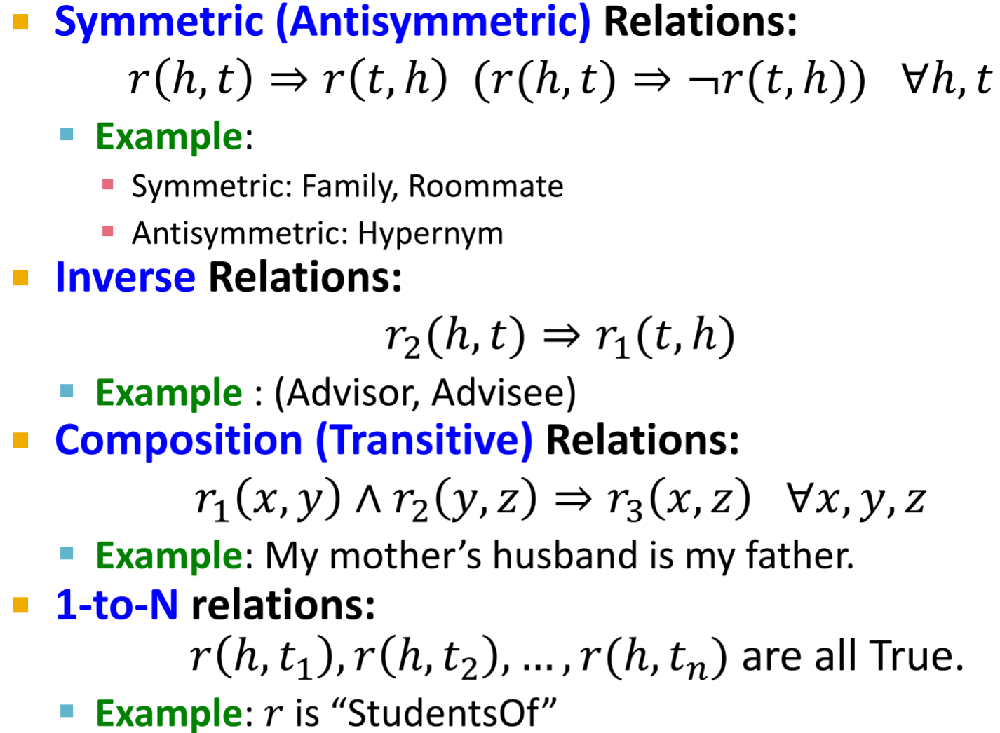
TransE能够表示非对称关系、相反关系、传递关系等，但不能表示对称关系、1-to-N关系。
TransR
在TranE中，所有的关系都是在同一个embedding space中的，TransR提出对每一个relation都附加一个投影矩阵，使得每一个relation的embedding space都是relation-specific的。
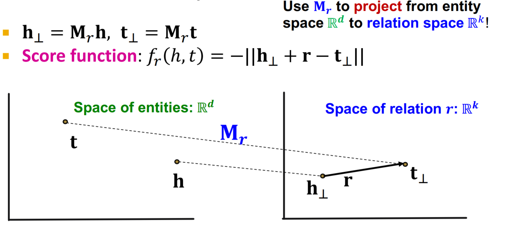
TransR是可以表示对称关系的
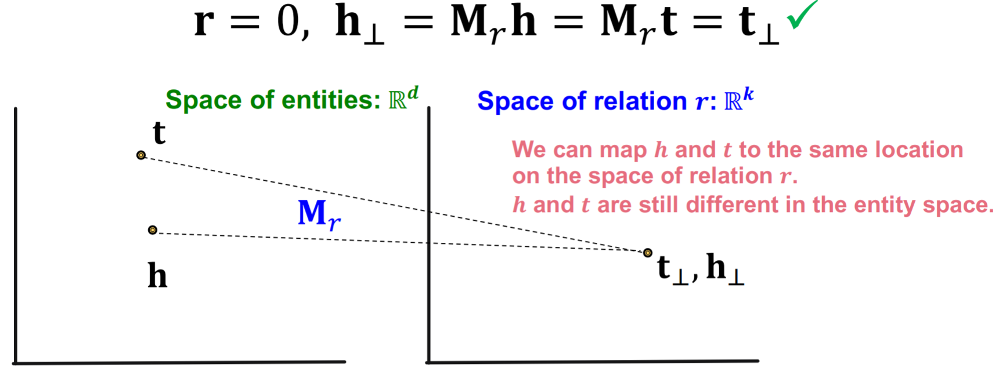
TransR也可以表示1-to-N关系
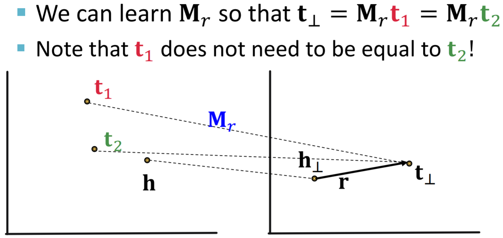
TransR还可以表示非对称关系和相反关系，但由于每个关系都有不同的embedding space，是无法表示传递关系的。
DistMult
TransE和TransR的分数函数都是embedding space中的距离，DistMult采用了一个不同的分数函数
可以将其看做$\mathbf{h}\cdot\mathbf{r}$和$\mathbf{t}$的余弦相似度。
DistMult能够表示对称关系和1-to-N关系，但不能表示非对称关系、相反关系、传递关系。
ComplEx
ComplEx将DistMult延伸到了虚数域，其分数函数定义为
其中$\overline{\mathbf{t}}_{i}$表示$\mathbf{t}_{i}$的共轭。
ComplEx能够表示非对称关系、对称关系、相反关系、1-to-N关系，但是不能表示传递关系。
各模型表示能力总结如下，在实际中可根据实际需求选择不同的方法。
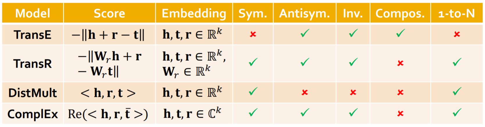
Reasoning in Knowledge Graphs
上面介绍的知识图谱补全问题是对于给定的(head,relation)找到缺失的tails，可以看做是回答单跳的queries，这一部分介绍知识图谱上的多跳推理。我们主要讨论两类多跳的问题：path queries和conjunctive queries
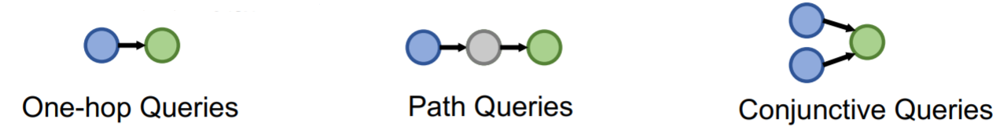
在这一部分我们以如下生物医学知识图谱为例
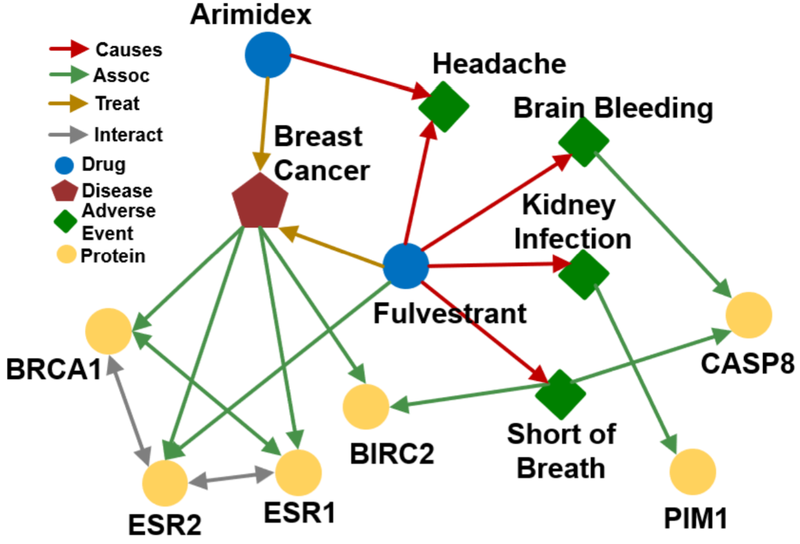
我们可以采用遍历的方法来解决path queries，即将其拆分为多个单跳queries。但是由于知识图谱通常都是高度不完整的，这种方法是无法得到所有answer的。比如对于query: (e:Fulvestrant, (r:Causes, r:Assoc)), 缺失的边会造成答案的缺失
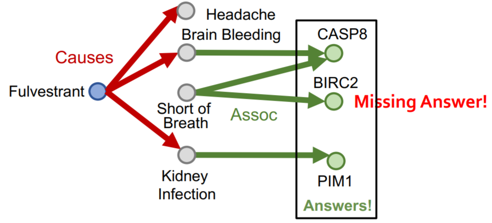
对于conjunctive queries，我们依然可以采用遍历法，但是对于不完整的知识图谱同样会有答案缺失的问题。
Answering Predictive Queries on Knowledge Graphs
那么如何在不完整的知识图谱上解决path queries呢，这里介绍一种基于TransE的方法。这里我们定义一个query embedding: $\mathbf{q}=\mathbf{h}+\mathbf{r}$, query的答案就是离$\mathbf{q}$最近的entity $\mathbf{t}$。对于多跳的query，可以定义$\mathbf{q}=\mathbf{v}_{a}+\mathbf{r}_{1}+\cdots+\mathbf{r}_{n}$.
由于path queries是有传递关系的，因此TransR/DistMult/ComplEx都是无法使用的。
Qeury2box: Reasoning over KGs Using Box Embeddings
对于conjunctive queries，这里介绍一种基于box embedding的方法。这里我们将query embedding定义为一个超矩形$\mathbf{q}=(\operatorname{Center}(q), \operatorname{Offset}(q))$
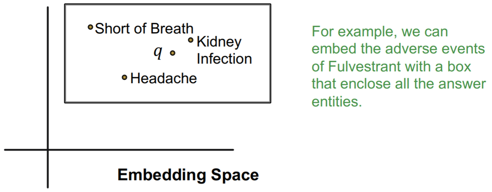
当我们在当前query $q$上增加一个relation $r$时，我们可以对其对应的box进行一个映射
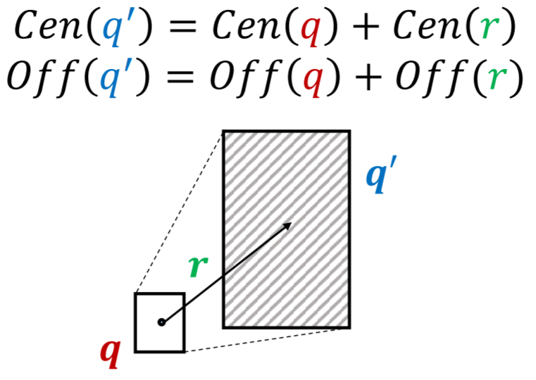
分数函数定义为其中$0<\alpha<1$.
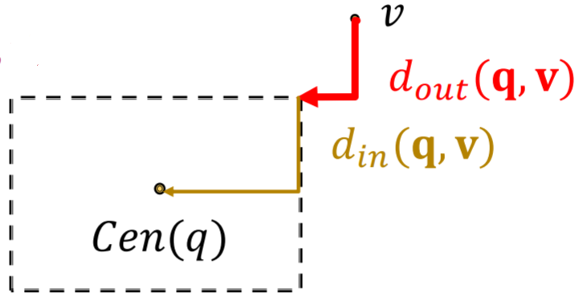
那么如何求不同box之间的交集呢？最简单的当然是直接求不同超矩形之间相交的部分，这里介绍一种更为灵活地交集算子$\mathcal{J}$，其对应的$\operatorname{Center}$和$\operatorname{Offset}$的计算规则分别为
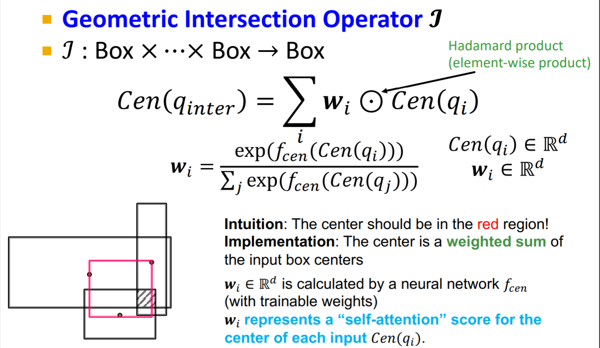
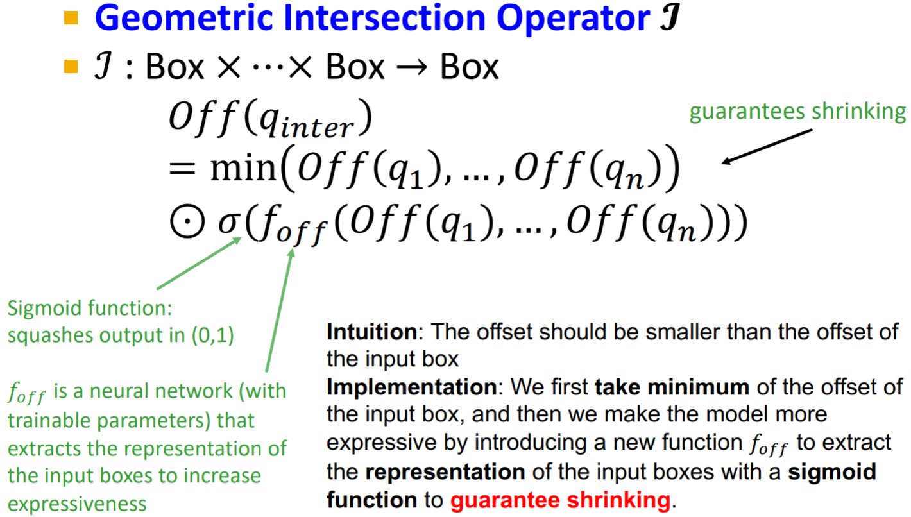
conjunction queries可以看做是AND queries，能否将其扩展到AND-OR queries呢？对于取并集的操作，我们是无法在低维空间中将正确答案与错误答案进行分离的
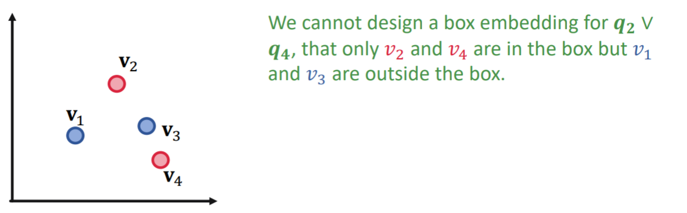
一种解决办法是将求并集的操作全部放到最后一步
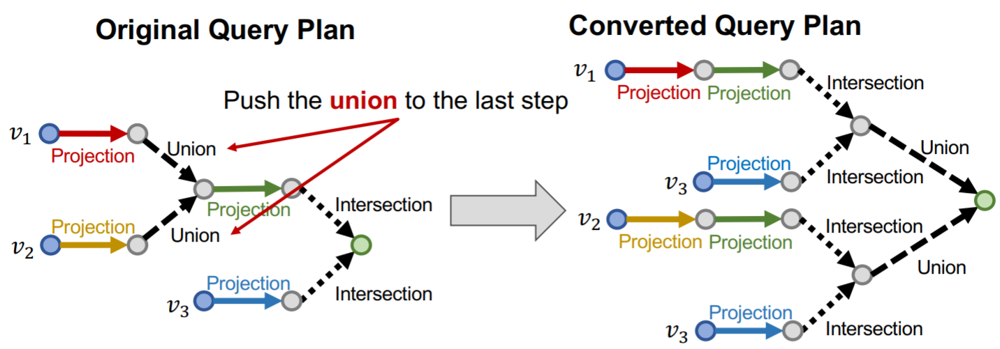
对于$q=q_{1} \vee q_{2} \vee \cdots \vee q_{m}$,可以定义
即只要entity与其中的一个query $q_i$接近，就认为它与query $q$接近。
在构造训练集时，要注意从多种模板进行构建，训练过程与知识图谱补全问题类似
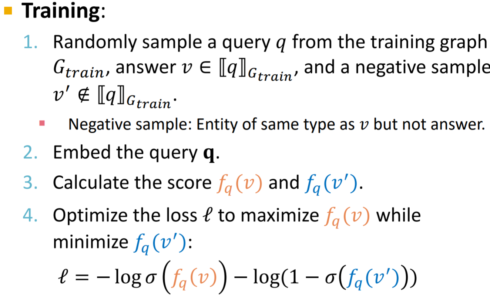